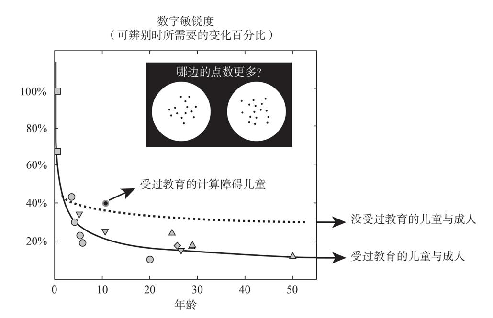

数字……是人类大脑所能够形成的最抽象且形而上学的思想之一。
亚当·斯密（Adam Smith），《有关语言最初形成的思考》（Considerations concerning the first formation of languages）
由于计数需要人们掌握物品与一系列数量或计数符号之间精确的一对一匹配关系，因此计数似乎促使我们将近似数量表征、离散物品表征以及语言代码的概念整合58。没有人知道这个过程到底如何发生，但是欧美国家中的儿童在三四岁的时候会经历这个数字加工过程的突变59。他们突然意识到，每个数词都指代一个精确数量。这个从最初的近似数量连续体中提炼出离散数字的“结晶”过程，似乎正是蒙杜卢库人所缺乏的。
有关数感如何随年龄发展的量化研究为这个变化提供了一个线索。我们对蒙杜卢库人的实验中的变量能够轻易地转变成一个用来评估数感精度的精确测量装置。我和曼努埃拉·皮亚扎设计了一个3岁儿童就能完成的基础测试，在测试中我们让被试看两个点阵，一个在左，一个在右，然后要求被试指出数量更多的点阵。实验可以通过细微地改变数字间的距离来调整任务的难易程度，从而确定出数量的最小可觉差（见图10-7）。就像使用视力表一样，这个测试可以精确地估计出每个人对数字的“敏锐度”。出人意料的是，随着年龄增加，数字敏锐度剧增60。6个月大的婴儿需要数字距离发生100%的改变（也就是增减一倍的数字），才能稳定地指出数量较多的点阵。而3岁的儿童，改变量可以降低到40%，随后几年还会持续下降。

出生后第一年，婴儿可以辨别出数量变化比例足够大的两个数字（比如8和16，变化率为100%）。数字敏锐度随着年龄的增长不断提高，成年人已经能够辨别出数量变化比例很小（如15%）的两个数字（图中的14个点和16个点）。然而，在亚马孙流域的蒙杜卢库部落里，未接受教育的成人只能辨别出变化比例为30%的数字，这与学龄前儿童的敏锐度相近，这说明教育有效地提高了我们的数量直觉。虽然这个非言语的测验非常简单，但它同样能够鉴别出患有发展性计算障碍的儿童——10岁的儿童只能达到5岁儿童的数字敏锐度。
图10-7 数字敏锐度随着年龄增长和教育程度提高而不断提高
资料来源：重绘自Piazza et al., 2010中的数据。
在3岁之前，人类数字敏锐度产生的变化最大，我们很容易把这种变化与儿童掌握数词能力的时间联系起来。数感的精细化过程就像一个镜头，它能够对数字进行越来越清晰的聚焦。这也许是使儿童能够从最初的连续数量体中识别出离散的“晶体”类别，并为这些“晶体”贴上数字标签的一个关键因素。
这个数字敏锐度逐步细化的过程也许能够解释，为什么儿童需要花很长的时间掌握数词“一”，再过几个月才学会数词“二”，然后是数词“三”：由于数轴是以被压缩的形式呈现，那些在概念上更接近的大数字在生命的较晚阶段才能够成为被关注的焦点。
反过来，学习数词对于数感的准确性也有影响。欧美地区成人的数感精度最终能达到15%～20%；在不数数的情况下我们就可以辨别出30和36的差异。没有受过教育的蒙杜卢库成年人的精度接近30%，当数字的差异达到欧美地区成人可辨别的2倍时才能够辨别它们61。这显然是教育带来的效果，因为受过教育并升入三年级的蒙杜卢库人，在学习了数字概念和计数之后，其数感精度也会达到15%～20%这一水平。
简而言之，学龄前期，我们的数感和计数系统之间的双向交流促成了一个紧密整合的改良系统。在这个系统中，每个数字符号都被自动赋予了一个越来越精确的含义。我们现在才刚刚开始了解这种变化在大脑层面是如何发生的。在研究了猴子的神经元如何编码点阵数量后，安德烈亚斯·尼德和他的团队开始了一个冒险却具有启发性的实验。他们用阿拉伯数字来训练猴子62。在几个月的时间内，他们每天训练两只恒河猴将阿拉伯数字1、2、3、4与相对应数量的点阵进行匹配。最终，这两只灵长类动物表现得非常好。有趣的是，实验中仍观察到数字距离效应。它们倾向于把出现的数字与邻近的数字混淆，这就表明它们确实是在判断数量。
当猴子熟练掌握该技能之后，尼德和他的同事开始对顶叶和额叶进行单神经元记录，顶叶皮层中包含能够对数量最快做出反应的神经元，额叶皮层中包含反应较慢的记忆神经元。引人注目的是，他们在这两个脑区都发现了能够对“符号”产生调谐曲线的神经元。例如，一个神经元对4能够产生最强烈的放电，但是对3放电少一点，对2更少，对1完全不放电。其他的一些神经元则偏爱1、2或3。显然，这些神经元并不仅仅对形状发生反应，它们关注与形状相关的数量，并且根据数值的相似性有规律地进行反应。
令人惊讶的是，在顶叶区域，大多数神经元对数字和点阵的偏好截然不同。它们只对其中一个方面调谐，不会同时调谐两者。无论目标是以点阵还是以阿拉伯数字的形式呈现，大部分前额皮层的神经元都对其数量进行编码。尼德把它们命名为“联合神经元”（association neurons），因为它们似乎能够独自建立起顺利完成匹配任务所需要的数字和数量之间的关联。此外，联合神经元的激活水平能够预测猴子的成绩。每当猴子在一个实验中反应出错时，神经元的调谐反应就会消失。与之相比，顶叶皮层上只有2%的神经元把数字和数量相关联，并且这些反应很弱很慢。
这些结果都说明，在符号学习的初级阶段，前额叶在结合“2”和“··”方面起了至关重要的作用。这个区域收集离散信息并形成新型组合，极有可能为心理整合（mental synthesis）提供了空间63。它连接了包括分类形状的颞下回和关注数量的顶叶在内的诸多高水平的脑区，因此它完美地适合于把这些信息聚焦成一个整体的数字概念。此外，前额神经元能够通过长时间的放电，即时地保持信息，因此起到了工作记忆缓冲器的作用，从而把呈现在不同时间里的两条信息汇合在一起。正是因为这个特性起到了关键的作用，猴子才能够掌握相隔几秒呈现的数字和数量之间存在的关联。
前额叶皮层的另一个关键特征是它参与了有意识的、付出努力的学习。我们在注意新信息、思考新策略或是意识到新联系时都会用到前额叶皮层64。然而当常规形成之后，由于知识被传送到了更加自动化的回路，前额叶的激活就会消失。安德烈亚斯·尼德的猴子很可能从未达到自动化的水平。符号学习很可能延伸了所有非人灵长类动物的极限，即使经过数月的训练，这个高难度的任务始终高强度地调用着它们的前额叶皮层。儿童的表现却不同，经过几年的教育，他们就能自动地建立起数字与数量的联系，这种联系很紧密，哪怕对一个快速闪现的、几乎完全看不清的数字，儿童也可以在大脑中迅速激活其对应的数量65。
目前，我们用脑成像技术追踪儿童学习阿拉伯数字和计算时的大脑激活情况66。最初，人脑与猴脑的激活模式相似。与成人相比，缺乏数学符号知识的儿童在做算术时前额叶出现了高水平的激活。然而，随着年龄增加和熟练程度提高，自动化形成后，前额叶皮层激活消失，转向顶叶和枕颞脑区，尤其是在大脑左半球67。可见，前额叶皮层似乎是建立起阿拉伯数字的符号关联的第一个关键皮层区域，这种关联在童年期会逐渐转移到顶叶。
如果这个解释正确，那就可以得到一个简单的预期：熟练掌握数字和数词的成人，他们的顶叶皮层应该存在“联合神经元”。在受过教育的人的大脑中，20个点的点阵、数词“二十”，或是阿拉伯数字20都应该能够激活相同的神经编码。我们要如何验证这个假设呢？正如我在前面说过的，我们实际上不能直接地在正常人脑中检测单个神经元，但是我们可以运用间接的方法。我和曼努埃拉·皮亚扎再次运用了适应范式。我们让被试不断地重复观看一系列数量总是落在某个范围内的点阵，例如17、18、19等。然后随机闪现一个可能很近（20）也可能很远（50）的数字，这个设计中最关键的部分在于，这个闪现的数字可能会以阿拉伯数字的形式呈现。我们推测来自顶叶皮层的神经成像信号在对20个点产生适应后，看到数字20的时候也会保持较低的激活程度，但是在看到数字50时会恢复。这种适应的模式表明，编码符号和非符号数字的神经元是相同的，它们能识别出20个点和数字20所隐藏的概念一致性。结果与我们推测的恰好一致，这证明了神经元再利用理论的一个重要方面：之前的进化中涉及具体物品的算术运算的脑区被重新利用，以习得新的文化符号。
目前通过高分辨率的fMRI技术可以更直接地证明上面的观点。我们直接区分出人类皮层的激活模式，并把每种激活模式与一个特定意义关联，例如一个特定的数字。这种方法被称为“大脑解码”（brain decoding），这个方法是可行的，因为编码不同数字的神经元通常在皮层上形成随机群集，尽管这些群集会随意地混合在一起。因此，数字4会在皮层表面引起一种可察觉的激活模式，而数字8则会引起另一种模式。这些模式无法用肉眼观察到，但是通过一个复杂的计算机学习算法就能将它们从噪声中区分出来，激活的脑区中的哪一部分与数字可靠地联系在一起也能被识别。最终形成了一个皮层解码器（cortical decoding machine），通过把大脑激活的图像作为输入信息，它可以输出对被试看到了哪个数字的判断结果。
这种大脑解码的效果好得惊人68。和我同一实验室的埃韦林·埃热（Evelyn Eger）设计了一个解码器，它能够以75%的正确率从两个数字中选出呈现的数字（随机正确率只有50%）。更令人印象深刻的是，经过阿拉伯数字训练后，我们的解码器能够推广到点阵中。可见在区别数字2和4时，我们多少会依赖用以区别2个点和4个点的神经元。通过扫描顶叶和额叶的全部脑区，埃韦林再次发现解码数字的最佳部位是顶内hIPS区域。尤其对受过教育的成人而言，顶叶是汇集数量和符号信息的脑区。教育促使我们对数量和符号使用了共同的神经编码。
然而这个理论仍存在一个难点。假如我们的数字符号只是被标注成近似数量，那么这些符号理应与蒙杜卢库的数字“5”“一些”“许多”没有什么不同。但是很明显，我们的数字工具远远超过了估算范围。阿拉伯数字和数词允许我们指代确切的数字，并能对13和14这样的数字进行分类。因此，数量编码不仅只是由教育造成的，它还必须经过大量的练习。一个以神经网络模型为框架的理论模型揭示了这一可能的过程69。这个网络模型在加工点阵时，会发展出对近似数量进行调谐的神经元，就像安德烈亚斯·尼德的数字神经元。然而，当这些神经元需要共同处理符号数字时，它们会分裂成更小的小组，每个小组敏锐地编码一个特定的数字。在这个模型中，编码近似数量与编码精确数字符号的神经元是相同的，但是它们的调谐曲线不同。符号调谐曲线更加尖锐，因此它们能够编码精确的数量。换句话说，点阵会在顶叶神经元中引起分布广泛并且模糊的激活，而符号引起的放电则集中在一个具有高度选择性的较小的亚组。
目前，对于这个理论只有一些比较隐晦的证据支持70。适应和解码过程中表现出的微弱不对称性表明，这种预期的数字解码过程中的精炼很可能只发生在左侧顶叶皮层。这个发现很有道理。只有左侧顶叶既有数量编码，也可以让它与位于大脑左半球的语言和符号编码系统建立直接联系。此外，有直接证据表明，这一区域在数字发展过程中表现出了对左半球越来越强的单侧化，并且这一过程与言语网络的左半球单侧化存在紧密联系71。但该理论最引人注目的是，它能直接解释幼儿为什么也有对数词的直觉。即使没有受过任何教育，一旦这些数词表征到了顶叶的数字神经元，它们就会获得一个数字意义并能够进行直觉计算。因为使用了相同的神经元，任意一个阿拉伯数字，比如8，都具有与相应的数量属性相同的心理表征。